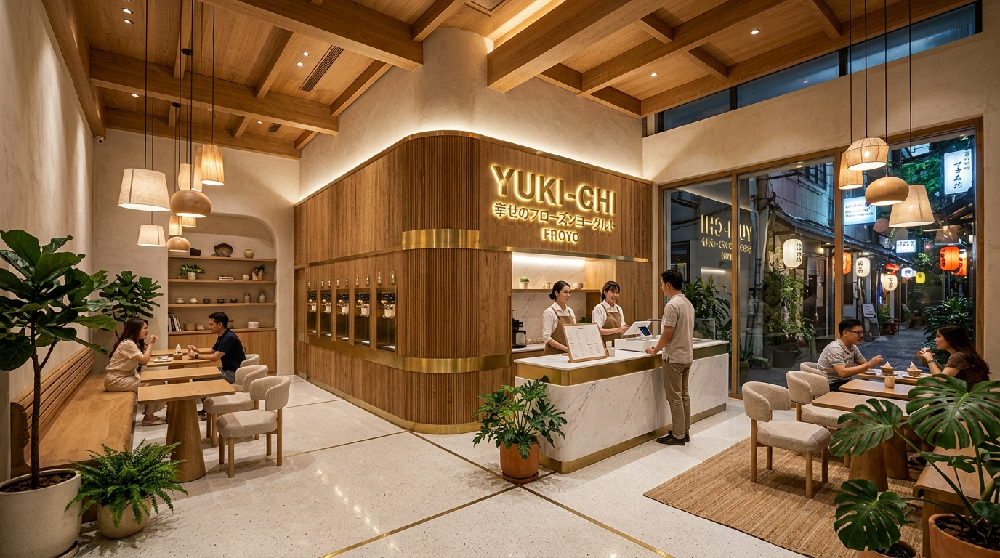
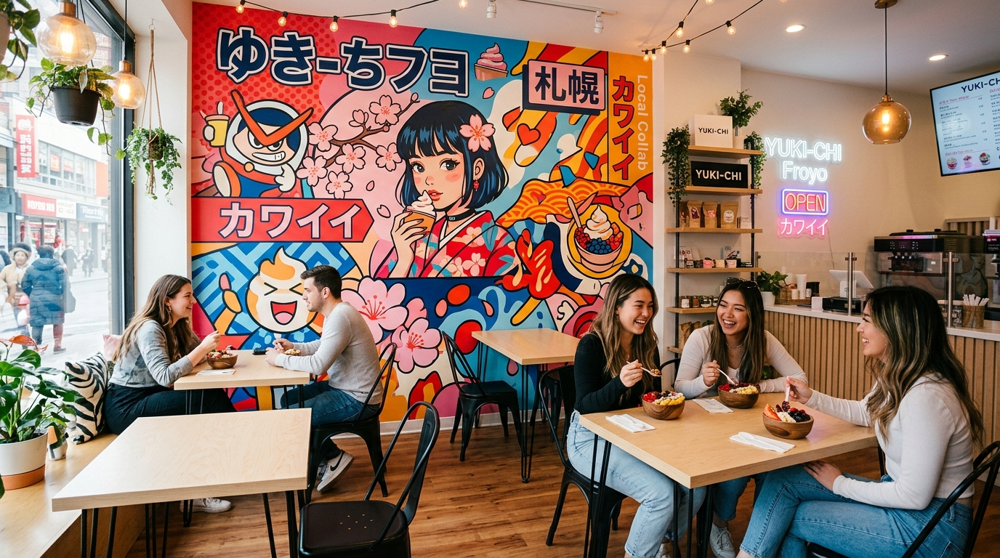
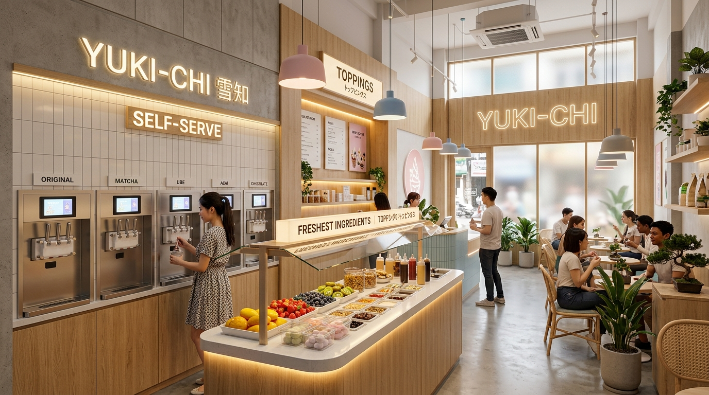

A immersive walk-through of Yuki-Chi's physical location in Japan Town (District 1, HCMC).
Warm curved timber panelling, recessed brass soft serve handles, and terrazzo flooring for high foot-traffic durability.
Full-height photogenic mural area combining Japanese kawaii pop culture with iconic Saigon landmarks.
Warm 2700K woven pendant lamps, light birch tables, and indoor greenery designed for extended dwell time.


